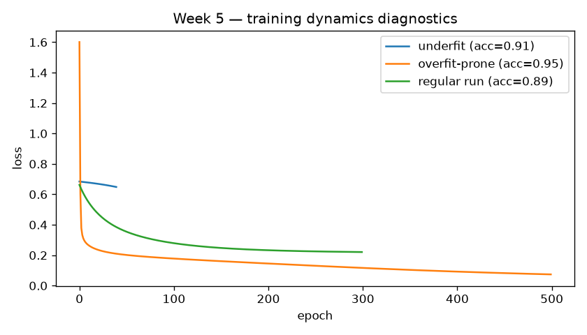

Week 5 · Diagnostics dashboard
Interactive-enough static dashboard for overfitting / underfitting experiments (handbook deliverable).

{
"deliverable": "week05_diagnostics_dashboard",
"underfit_test_acc": 0.91,
"overfit_prone_test_acc": 0.95,
"healthy_test_acc": 0.89,
"notes": [
"Underfit: capacity too small / too few epochs.",
"Overfit-prone: tiny train set + high capacity \u2192 train loss collapses, test weaker.",
"Healthy: moderate capacity and train size."
]
}